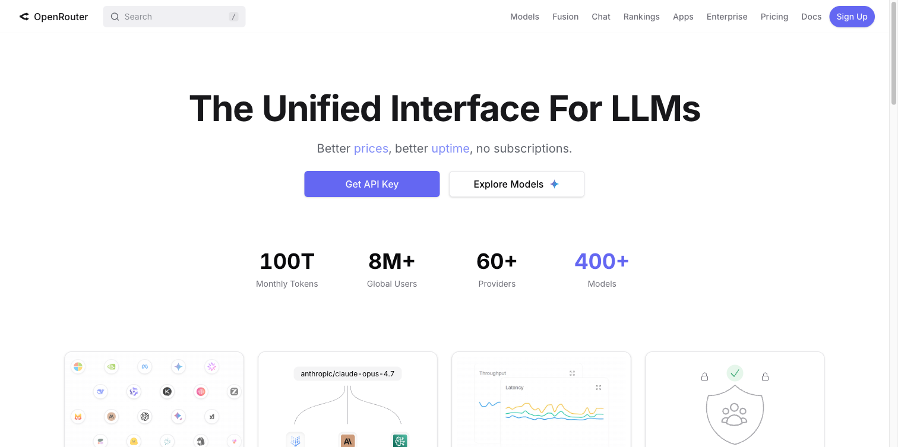
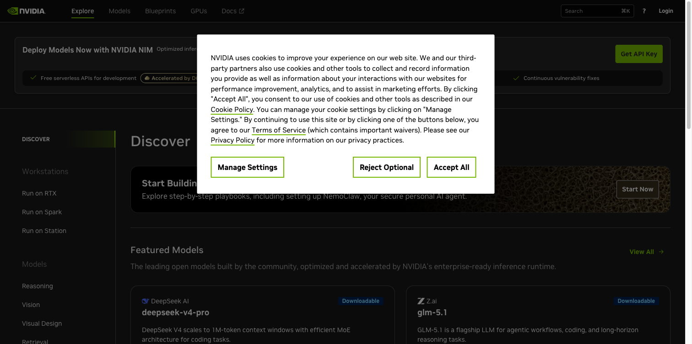

How to Use Claude (Basically) for Free
Three methods to run Claude Code with no subscription and near-zero cost — pick the one that fits you.
Claude Code normally bills against your Anthropic account. But it's built on an open API standard, which means you can swap in other model providers as the backend. This guide covers the three best free (or near-free) options in 2026, based on Nick Saraev's breakdown.
OpenRouter — Best for most people. Pennies per session, massive model selection.
NVIDIA NIM — Best if you want genuinely free credits and don't mind signing up.
Ollama — Best if you want zero cost forever and have a reasonably modern Mac or PC.
Before you start Install Claude Code
All three methods need the Claude Code CLI installed first. If you already have it, skip ahead.
curl -fsSL https://claude.ai/install.sh | bash
Run in Terminal. Installs the claude command globally.
npm install -g @anthropic-ai/claude-code
Requires Node.js 18+. Run in PowerShell or Command Prompt.
Method 1 — OpenRouter (cheapest & easiest)
OpenRouter is a routing layer that gives Claude Code access to dozens of models — including DeepSeek V3, Gemini, and Llama — for pennies. A $5 credit lasts most people weeks of regular use.

Step 1 — Create a free OpenRouter account
Go to openrouter.ai, sign up with Google or email, and add a small credit (even $5 is plenty to start).
Step 2 — Get your API key
Go to Keys in your dashboard and create a new key. Copy it — you'll use it in the next step.
Step 3 — Point Claude Code at OpenRouter
Set these two environment variables before launching Claude Code. The easiest way is to put them in your shell config (~/.zshrc or ~/.bashrc):
export ANTHROPIC_API_KEY="sk-or-v1-YOUR_KEY_HERE" export ANTHROPIC_BASE_URL="https://openrouter.ai/api/v1"
Reload your shell, then launch Claude Code with any OpenRouter model:
claude --model deepseek/deepseek-chat-v3-0324
deepseek/deepseek-chat-v3-0324 (DeepSeek V3 Flash — fast and cheap), google/gemini-2.5-pro, or anthropic/claude-opus-4-5 if you want real Claude at reduced cost.
Method 2 — NVIDIA NIM (actually free credits)
NVIDIA gives every new account 1,000 free API credits to use on their hosted model catalog — including DeepSeek R1, Llama, and Mistral. It's hosted inference, so no local GPU needed.

Step 1 — Create an NVIDIA account
Go to build.nvidia.com and sign up. It's free — no credit card required for the initial credits.
Step 2 — Generate an API key
Navigate to API Keys in the top right, click Generate Key, and copy it.
Step 3 — Configure Claude Code
export ANTHROPIC_API_KEY="nvapi-YOUR_KEY_HERE" export ANTHROPIC_BASE_URL="https://integrate.api.nvidia.com/v1"
Then launch Claude Code with a NVIDIA NIM model:
claude --model deepseek-ai/deepseek-r1
deepseek-ai/deepseek-r1 for reasoning-heavy tasks, meta/llama-3.3-70b-instruct for general coding, or mistralai/mistral-large-2-instruct. Check the full list at build.nvidia.com/explore.
Method 3 — Ollama (100% free, runs locally)
Ollama runs models directly on your machine — no API key, no credits, no bills. The trade-off is that local models are slower and require a capable Mac or PC (8GB+ RAM recommended, 16GB+ for the best models).
Step 1 — Install Ollama
Download from ollama.com/download and run the installer.
Step 2 — Launch with one command
Ollama has a built-in launcher that wires everything up automatically:
ollama launch claude
This opens a model picker. To skip it and jump straight in:
ollama launch claude --model kimi-k2.5:cloud
:cloud run on the provider's servers (still free through Ollama). Pure local models like qwen3.5 run entirely on your machine with no internet at all. We have a full Ollama guide — read it here.
Side-by-side comparison
| Method | Cost | Model quality | Setup time | Requires GPU? |
|---|---|---|---|---|
| OpenRouter | ~$0.001/session | Excellent (DeepSeek, Gemini) | 5 min | No |
| NVIDIA NIM | Free (credits) | Very good (DeepSeek R1, Llama) | 5 min | No |
| Ollama | Free forever | Good (depends on your hardware) | 10 min | Optional |